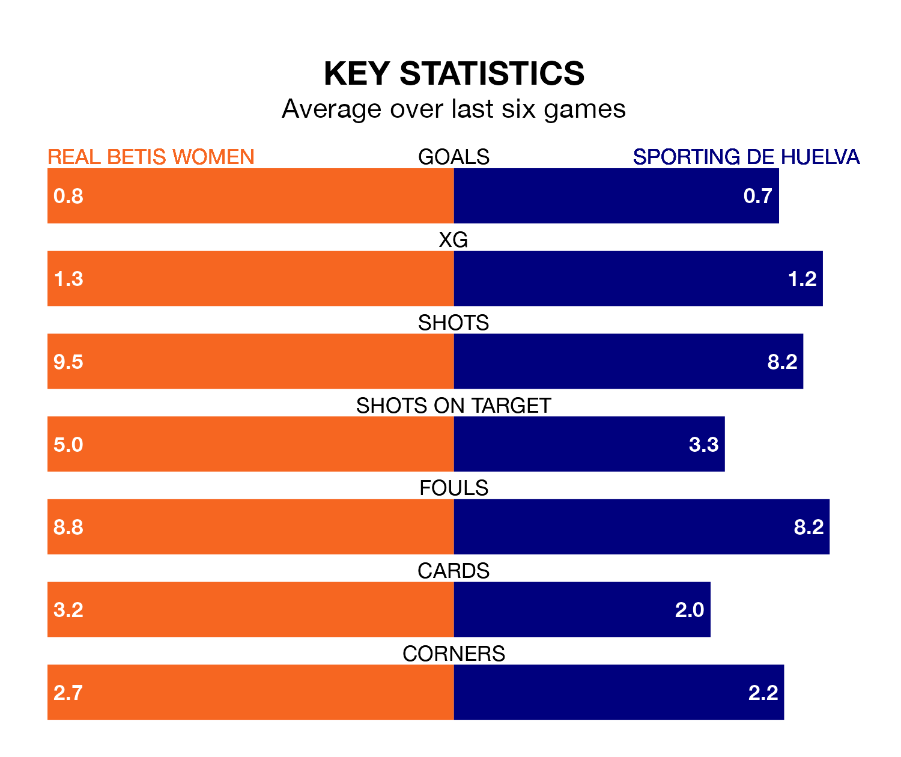

Saturday lunchtime's match at Ciudad Deportiva Luis de Sol sees the league's two bottom sides face each other, as Real Betis Women host rock-bottom Sporting de Huelva.
Betis Women have picked up 19 points from their first 19 Liga F games, with five wins and four draws.
That is 13 points more than Sporting have collected, having won one and drawn three.
Betis Women are in disappointing form in Liga F, with one win and three draws from their last six games.
With no wins and two draws over that period, Sporting's form is worse – they have taken two points from 18, compared to the hosts' six.
In the last 10 years, Betis Women and Sporting have played each other on 14 occasions. Betis Women won seven of them, Sporting three, and they drew four times.
On average, Betis Women scored 1.1 goals and Sporting 0.6 in those matches.
Their last meeting was on November 11, when Betis Women won 3-1 away.
With 15 goals in 24 games so far this season, the away side are the league's lowest scorers with 0.6 goals per game. And they are conceding more than average, letting in 49 goals at a rate of 2.0 per game.
Betis Women are also below average scorers, with 0.9 goals per game, compared to a league average of 1.6. They have conceded 2.5 goals per game.
Betis Women's last match was on Sunday, a 5-1 loss against Atletico Madrid Women, with Rosa Márquez Baena getting the goal for Betis Women.
Sporting lost 1-0 against Eibar Women last time out, on Saturday.
Updated: 07:59 (UTC), 26/04/24